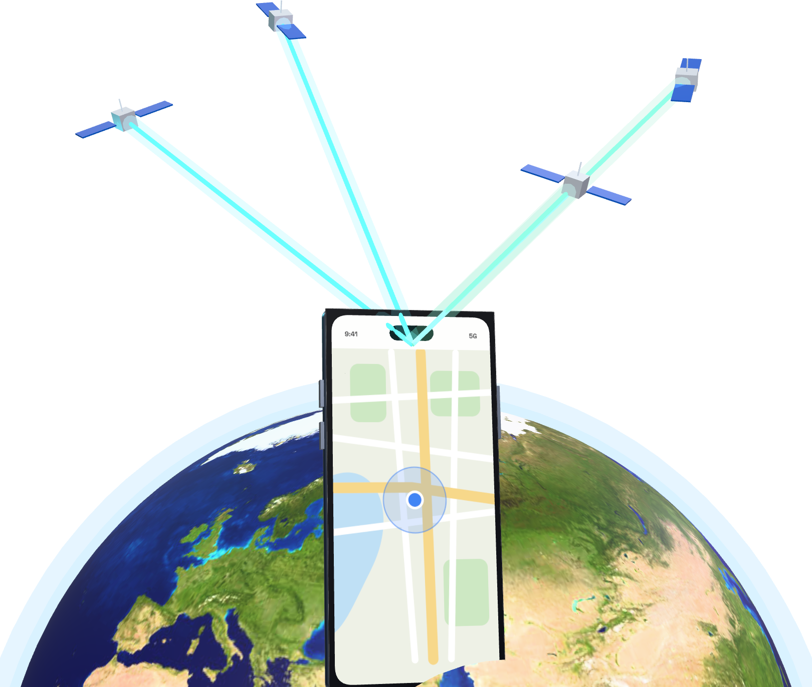
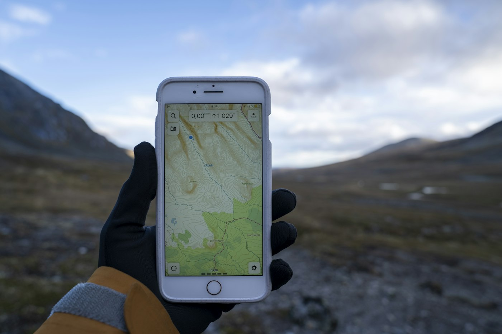
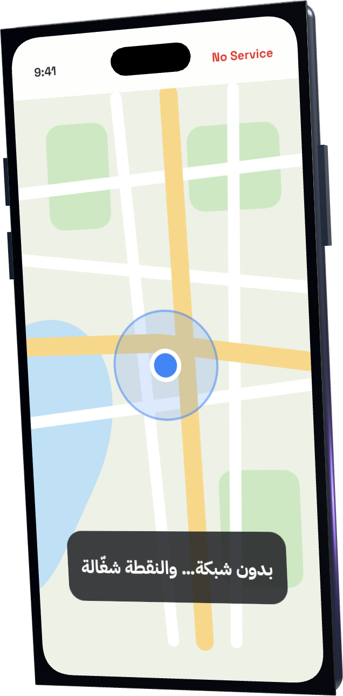
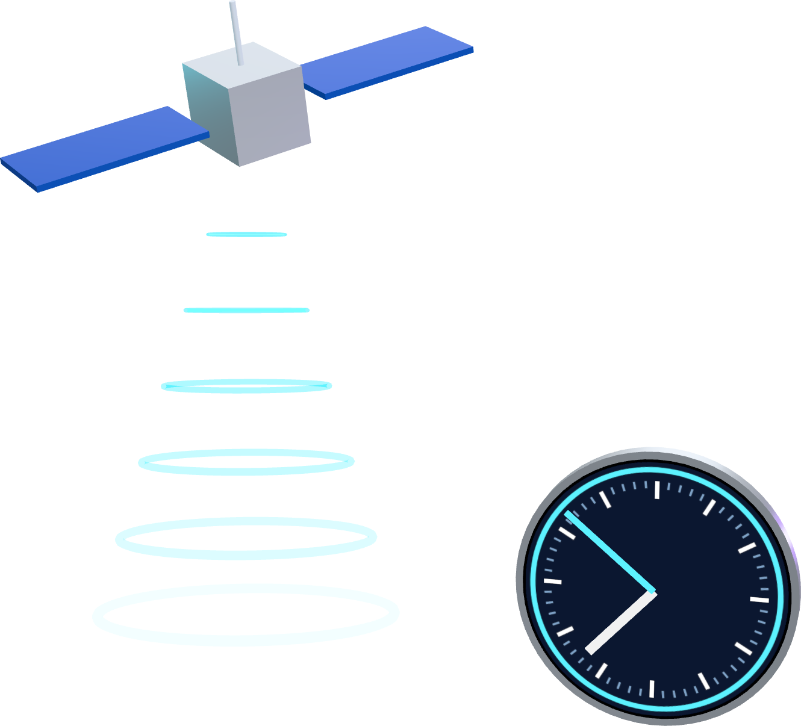
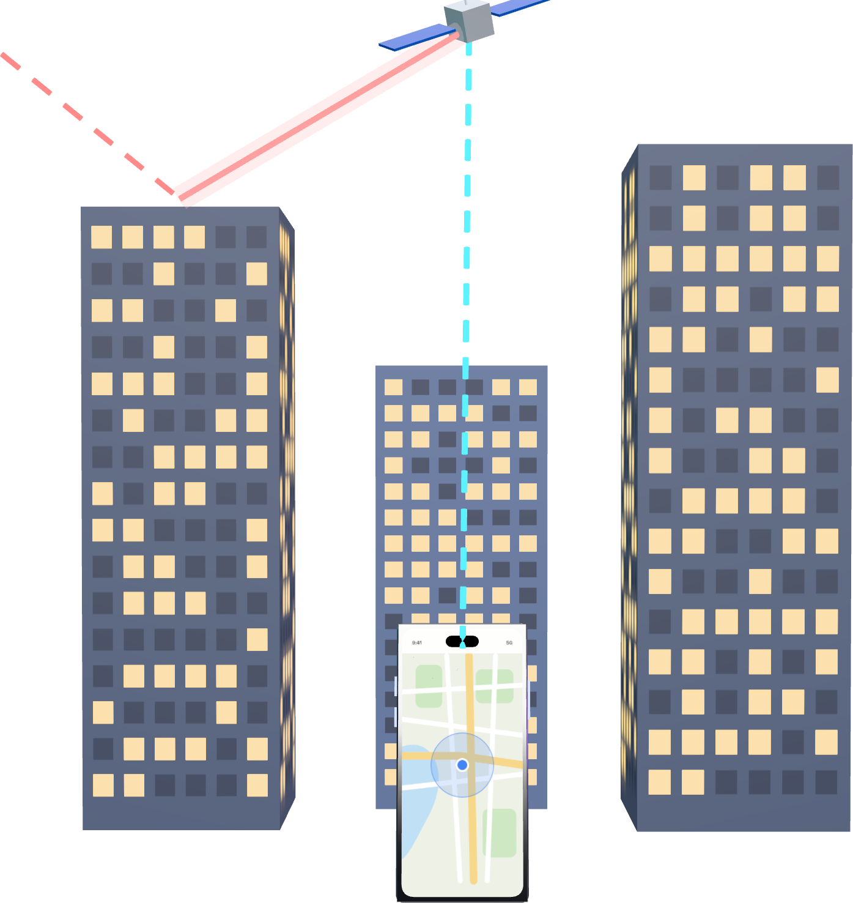

تقنية · الـ GPS
7/7
جوالك ما يسأل النت…
يسمع الفضاء
علي التميمي
كل يوم معلومة تقنية تهمّك
{{HANDLES}}
أرسلها لأحد يحسب الـ GPS يحتاج نت 👇

صور الشوارع والأسماء

مكانك أنت


تشوف البرق، وتعدّ 3 ثواني لين يوصلك الرعد… يعني العاصفة بعيدة عنك تقريباً 1 كم
